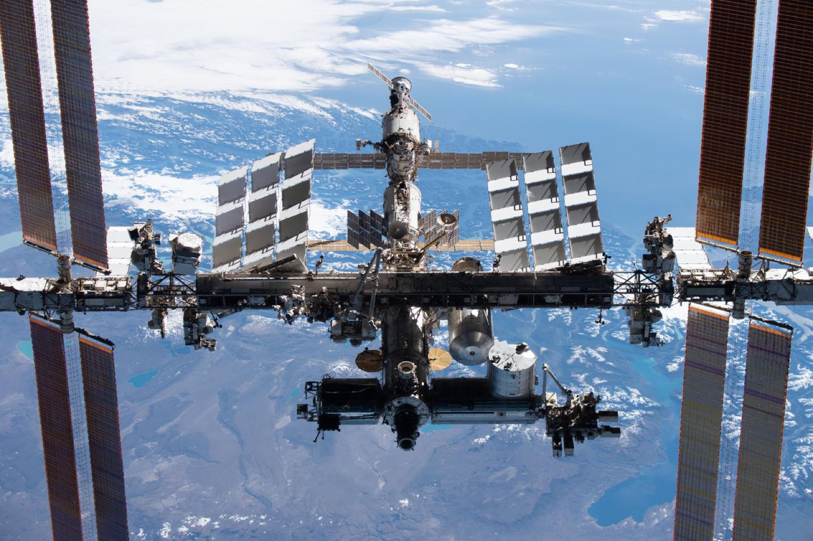
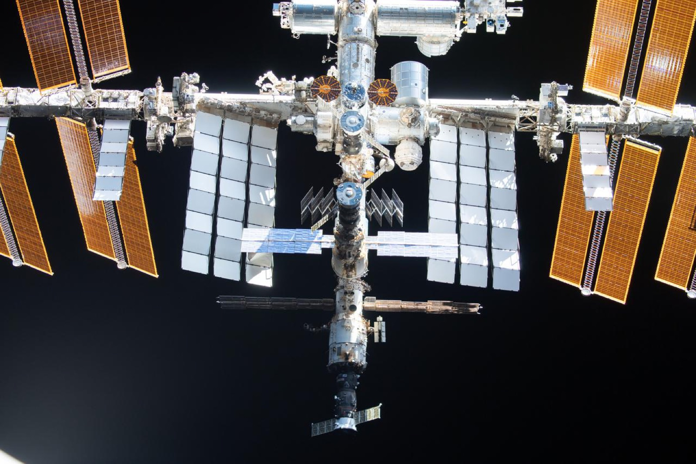
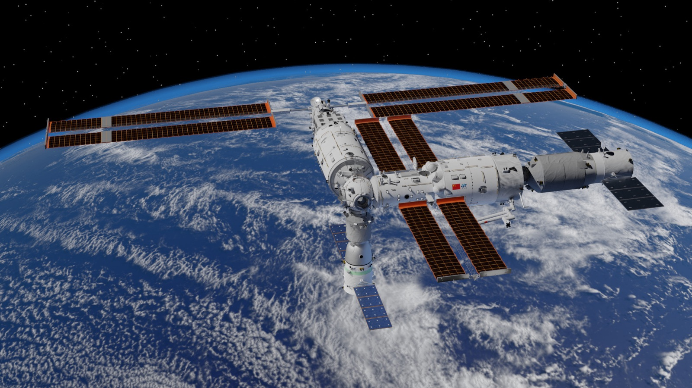

解释层 / 头顶的家
空间站：一直有人住在天上
空间站离地只有约 400 公里，90 分钟绕地球一圈——一晚上就把整个天空扫一遍，所以钉不到天图的某个点上。但它们值得单独一页：此时此刻，就有人在你头顶生活和做实验。
← 回到星空探索器 太阳系 → 观星台 →它到底怎么动的？——不静止，也不跟着地球自转
最常见的误会：以为空间站像挂在天上一样不动，或者跟着地面一起转。都不是。它在约 400 公里高处独立绕地球飞，地球在它底下自转，两件事互不同步。
- 飞得极快，一刻不停。速度约每秒 7.7 公里（时速 2.8 万公里），大约 92 分钟绕地球整整一圈，一天转 15～16 圈。相对地面它永远在高速移动，从来停不下来。
- 每圈都换一条地面轨迹。它自己在飞、地球在下面转，两者错开：每绕一圈，脚下扫过的地带就向西挪约 22.5°。所以它很少连着两圈经过同一个城市——这也是为什么它钉不到星图的某个固定点上。
- 和「静止卫星」正相反。天气、电视那类卫星要飞到约 3.6 万公里高、24 小时转一圈，才能刚好跟上地球自转、悬在同一个地方。空间站只有它们约九十分之一的高度、快得多，根本悬不住——想看它得用「Spot the Station」查那三四分钟的过境窗口。
- 为什么不掉下来？因为绕圈飞本身就是一直在「自由落体」：它横向飞得太快，每次往下掉都「错过」了地球，于是永远绕着落。那里的重力其实还有地面的九成左右——站上的人会飘，不是因为没重力，而是因为人和站正一起往下落。
- 一天 16 次日出。每绕半圈就从地球的影子里钻进钻出一次，所以站上一昼夜能看 16 回日升日落。
国际空间站
下面是 NASA 官方的国际空间站三维模型——点一下加载（约 3 MB），然后可以拖动旋转、滚轮缩放，把这座「足球场大小的太空实验室」翻过来看。
人类连续在轨生活最久的地方——从 2000 年 11 月至今，站上一天都没有断过人。
- 1998 年第一个舱段升空，由 15 个国家合作拼装了十几年，总质量约 420 吨。
- 轨道高度约 400 公里，时速约 2.8 万公里——站上的宇航员一天能看 16 次日出日落。
- 轨道倾角 51.6°：它的航线在南北纬 51.6° 之间来回摆，几乎覆盖了地球上所有有人住的地方，从赤道一直到北欧南端都会被它飞过。
- 按现行计划 2030 年前后退役：SpaceX 正在造一艘专门的离轨飞船，届时把它受控地带回南太平洋无人海域。想亲眼看它，得趁这几年。
- 它其实肉眼可见：暗天里像一颗不闪烁的亮星安静滑过，几分钟横穿天空。用下面的 NASA「Spot the Station」查它什么时候飞过你头顶。


中国空间站 · 天宫
天宫没有公开的官方三维模型，这张是社区制作的全构型渲染图（CC 授权）——天和核心舱居中，问天、梦天两个实验舱在两侧，组成 T 字构型。

2021 年天和核心舱升空，2022 年底搭成 T 字全构型——中国人自己的太空之家，从此常年有人值守。
- 轨道高度约 390 公里，和国际空间站是「邻居」；但天宫的轨道倾角约 41.5°、国际空间站是 51.6°，两家各走各的路，不会撞上。
- 2026 年 5 月神舟二十三号乘组进驻，其中包括首位来自香港的航天员。
- 本轮任务里有一项大实验：一名航天员将连续驻留一年，为更远的深空飞行积累医学数据。
- 站上已排了两百多个科学项目，从太空水稻到冷原子钟。国际空间站 2030 年退役后，天宫可能一度成为近地轨道上唯一有人的空间站。